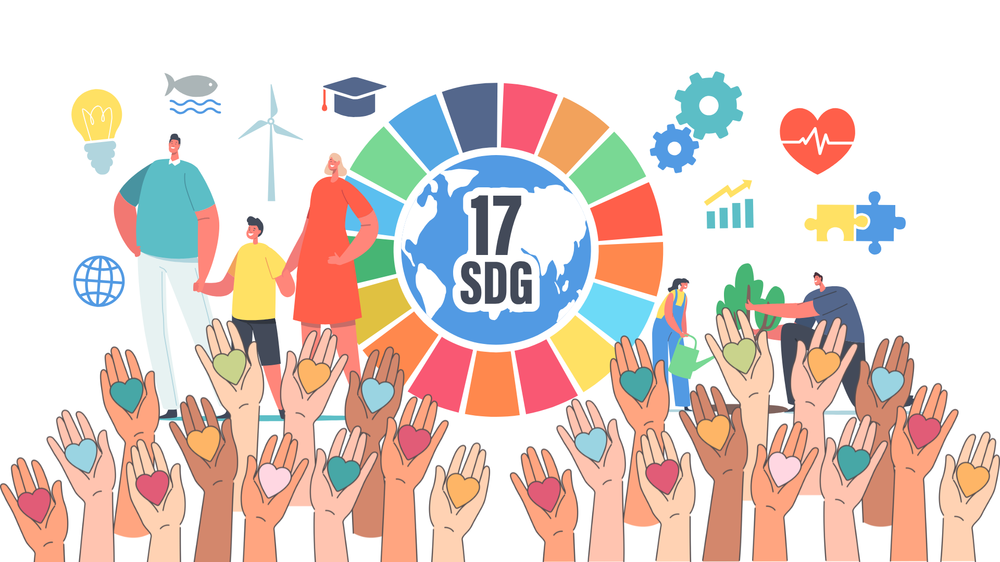
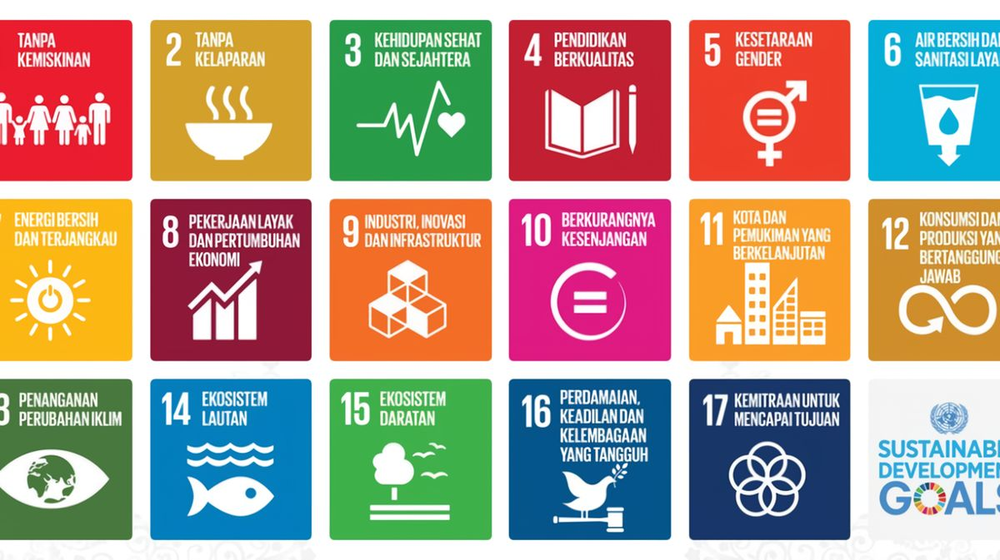
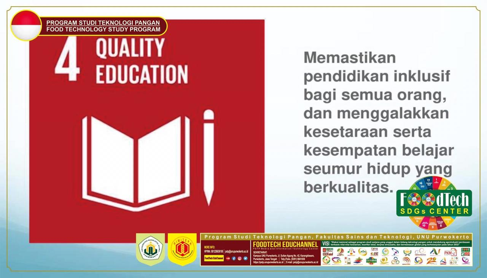
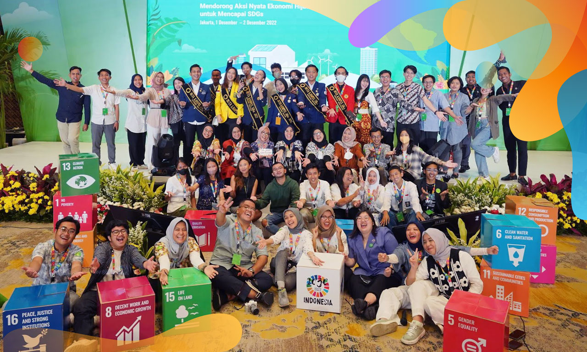
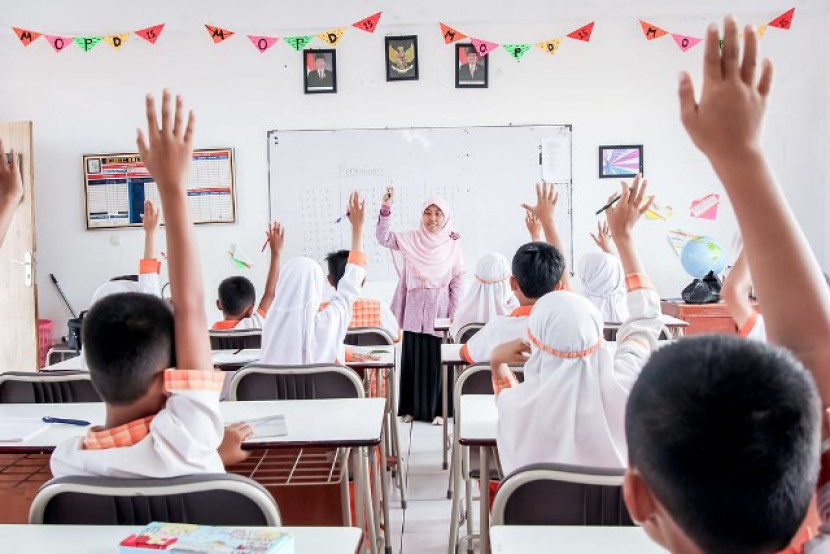
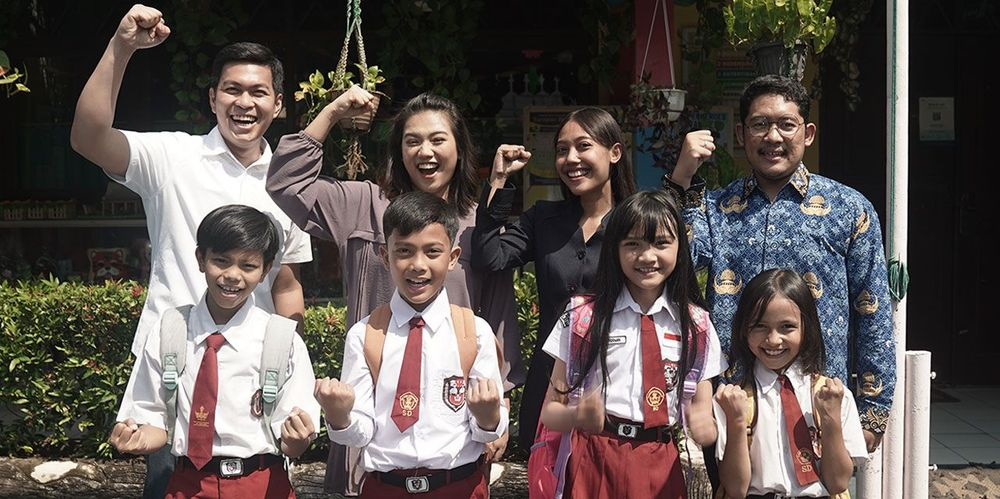
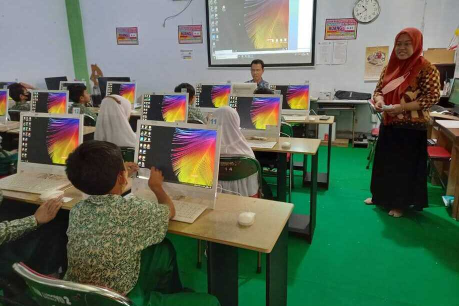
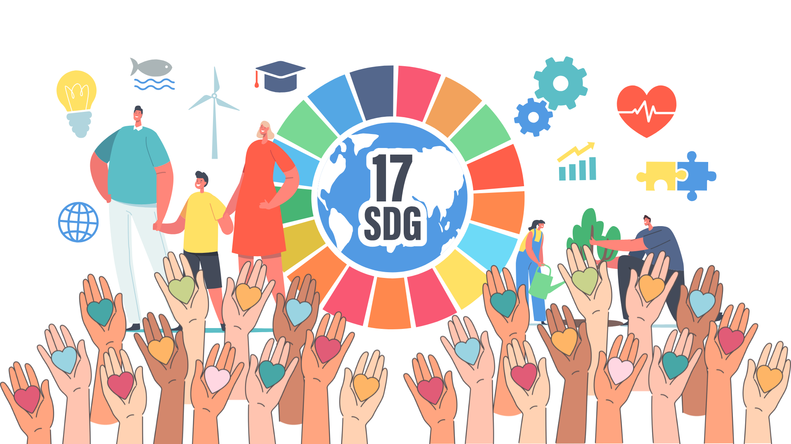
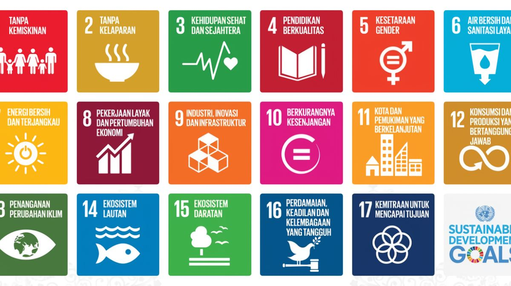
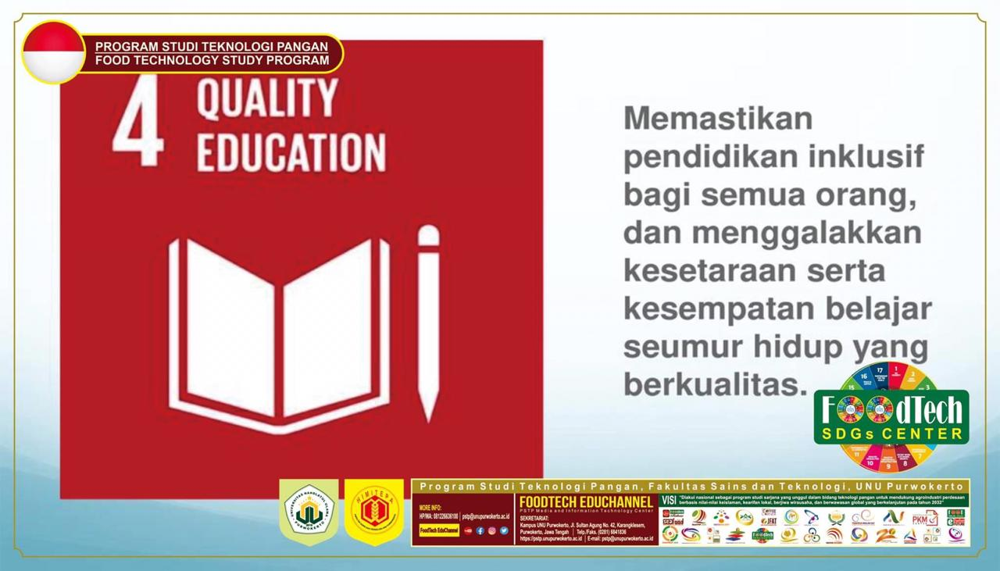
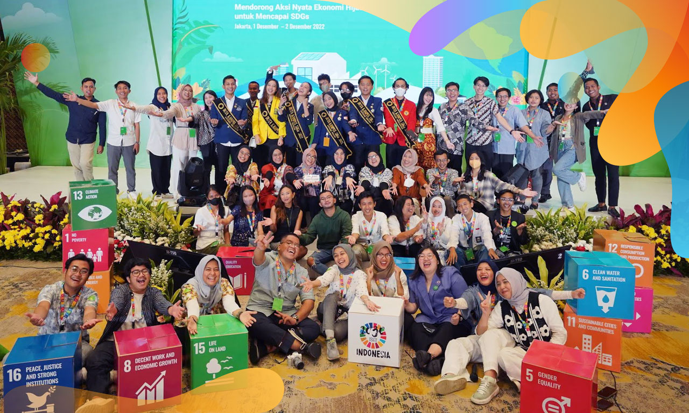
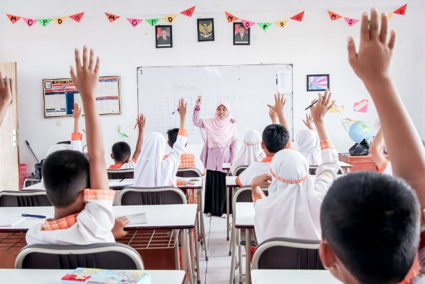
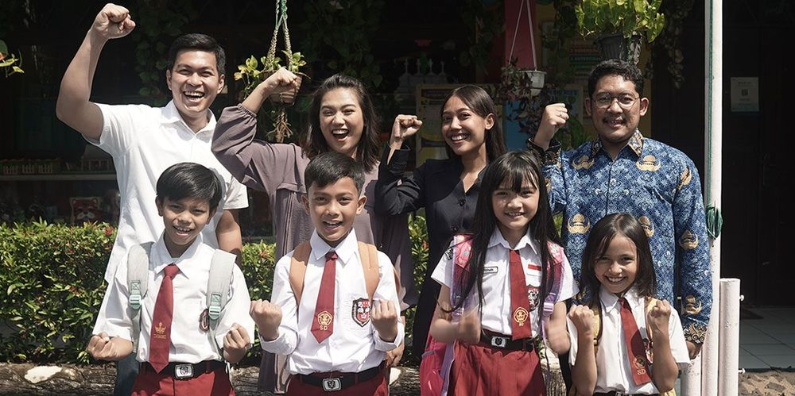
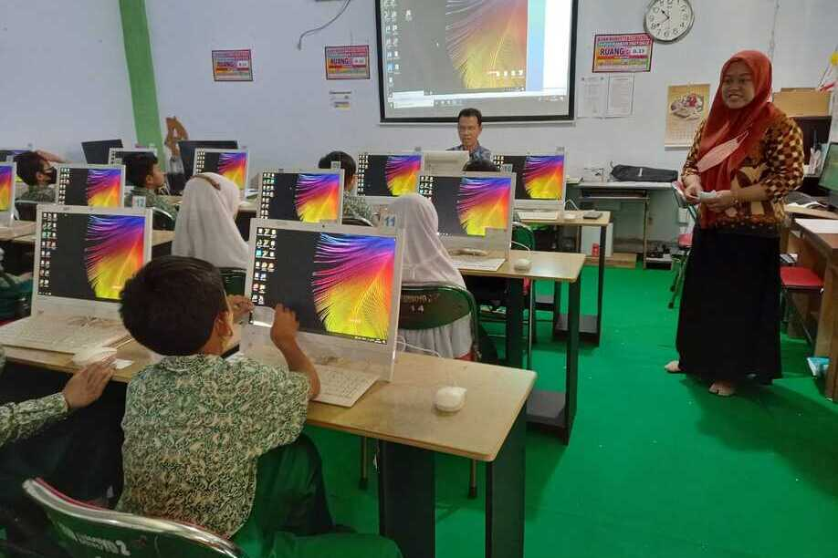
SDGs (Sustainable Development Goals) atau Tujuan Pembangunan Berkelanjutan merupakan kegiatan dan komitmen yang sudah dibuat oleh global (internasional) dan ditetapkan oleh PBB dalam mencapai masa depan global yang lebih baik, berkelanjutan, dan damai. SDGs memiliki 17 tujuan untuk mencapai kesejahteraan dunia secara holistik pada tahun 2030, salah satunya yaitu tujuan ke 4 berjudul “Pendidikan Berkualitas”
Tujuan ini memastikan bahwa seluruh anak sekolah diberi pendidikan yang adil, inklusif, dan berkualitas. Tujuan ini menekankan pentingnya akses pendidikan kepada siapapun yang berkualitas dimulai dari jenjang dasar hingga tinggi, hal tersebut akan membuat masyarakat dapat berpikir lebih secara kritis dan kemampuan mereka yang sudah dilatihkan. Pendidikan berkualitas mempunyai sasaran untuk 2030, berikut adalah beberapa sasarannya berupa:
4.1 Menjaminkan untuk semua perempuan dan laki-laki akan menyelesaikan pendidikan dasar dan menengah tanpa dipungut biaya, setara, dan berkualitas, yang diarahkan kepada pembelajaran yang lebih efektif dan relevan.
4.2 Menjaminkan untuk semua anak perempuan dan laki-laki akan diberi akses terhadap early childhood development & care sehingga mereka akan siap untuk menempuh pendidikan dasar.
4.3 Menjaminkan bagi semua perempuan dan laki-laki untuk akses yang sama ke pendidikan teknis, kejuruan, dan pendidikan tinggi dengan pendidikan yang berkualitas.
4.4 Meningkatkan angka warga yang memiliki kemampuan yang relevan termasuk keterampilan teknik dan kejuruan, untuk pekerjaan, pekerjaan yang layak dan kewirausahaan.
4.5 Menghilangkan semua disparitas gender dalam pendidikan dengan memberi akses kepada semua yang setara tingkat pendidikan dan pelatihan kejuruan.
Pendidikan yang berkualitas biasa dominan pada negara yang maju ataupun wilayah pada negara yang biasa di kawasan pusat negara, muncul itu ketidaksetaraan pendidikan di wilayah terpencil atau wilayah perbatasan karena dengan akses yang terbatas seperti kurangnya tenaga pengajar dan fasilitas yang diperlukan untuk berpendidikan. Namun, isu tersebut dapat diatasi dengan pembelajaran jarak jauh yang jauh lebih efektif dan juga mengikuti perkembangan teknologi dan membuat anggaran yang lebih besar agar dapat memfasilitaskan anak-anak pedesaan dengan pendidikan yang berkualitas
Masih ada di beberapa wilayah/negara terjadi ketidaksetaraan gender terhadap pendidikan. Perempuan biasa dikenal dan bertumbuh sehingga bekerja sebagai ibu rumah tangga dan tidak mendapatkan akses ke pendidikan yang berkualitas yang dapat memicu konflik mengenai ketidaksetaraan gender dengan pendidikan yang terbatas. Namun, isu tersebut dapat teratasi dengan kebijakan pemerintah yang seharusnya mendukung pendidikan yang berkualitas diberikan ke siapapun tanpa diskriminasi dan menghimbau masyarakat untuk mengubah pola pikir mereka terhadap perempuan yang biasa dibilang kurang layak untuk mendapatkan pendidikan dengan pemberian program dan beasiswa untuk mendorong partisipasi para perempuan.
Dengan perkembangan teknologi, banyak sekali alat teknologi canggih yang digunakan dalam kehidupan sehari-hari terutama untuk bidang pendidikan. Akan tetapi, beberapa sekolah yang ada belum sepenuhnya menerapkannya dan bagi siswa-siswi yang sedang beradaptasi menggunakan alat teknologi yang lebih canggih akan terhambat akan pembelajarannya karena belum terbiasa. Namun, hal tersebut dapat diatasi dengan sosialisasi penggunaan alat teknologi yang diperlukan dan program mentoring bagi siswa-siswi yang memang masih sulit atau kebingungan dengan cara menggunakan alat teknologi tersebut.